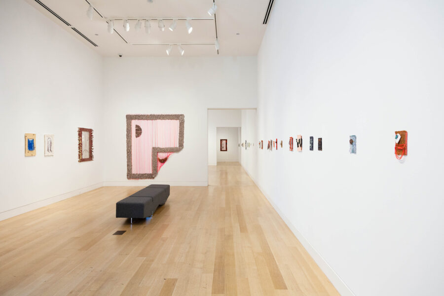

Book Launch & Conversation: Alice Tippit: Rose Obsolete
Join us as we celebrate the release of the accompanying publication for DePaul Art Museum’s exhibition Alice Tippit: Rose Obsolete, designed by Omnivore. Artist Alice Tippit will be in conversation with contributing authors Mary Simpson and Johanna Fateman, moderated by DPAM Curator Ionit Behar, at EXPO Chicago.
This program is presented in partnership with DePaul Art Museum and EXPO Chicago.